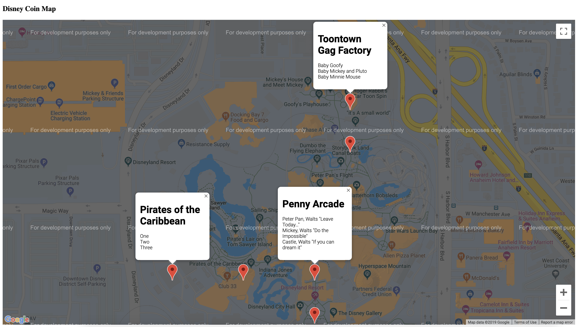
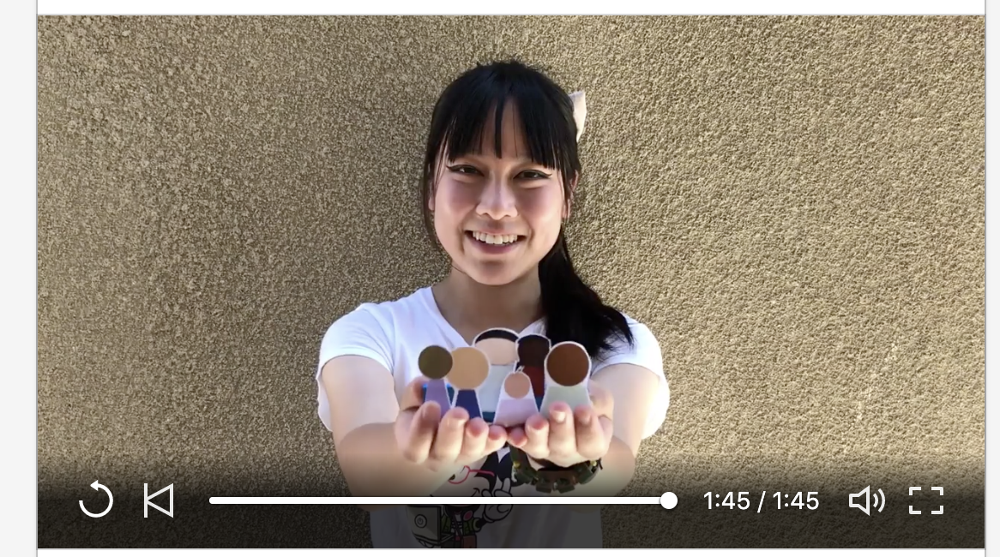
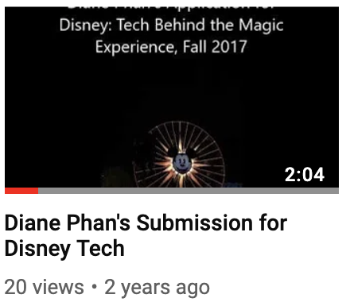
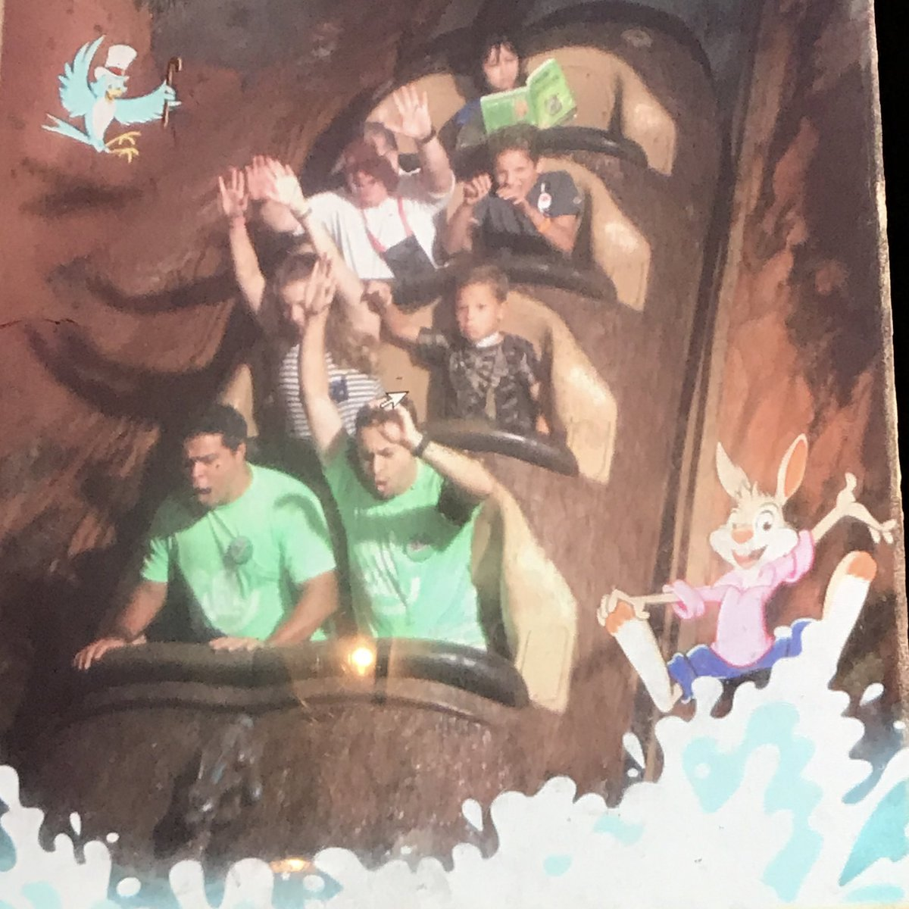
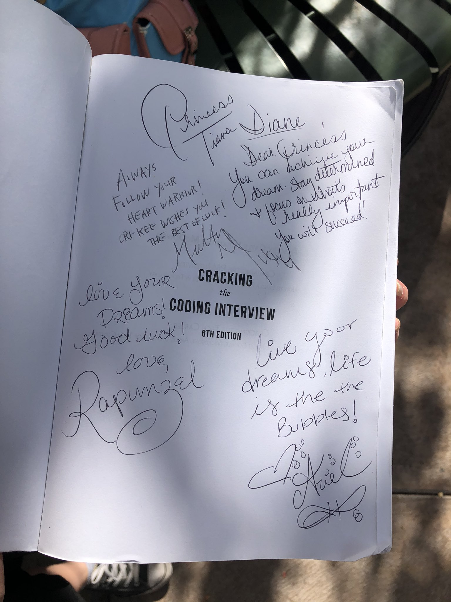
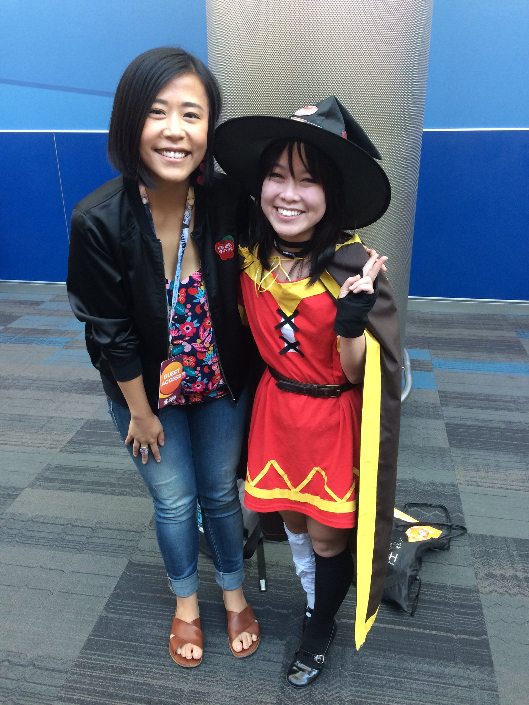
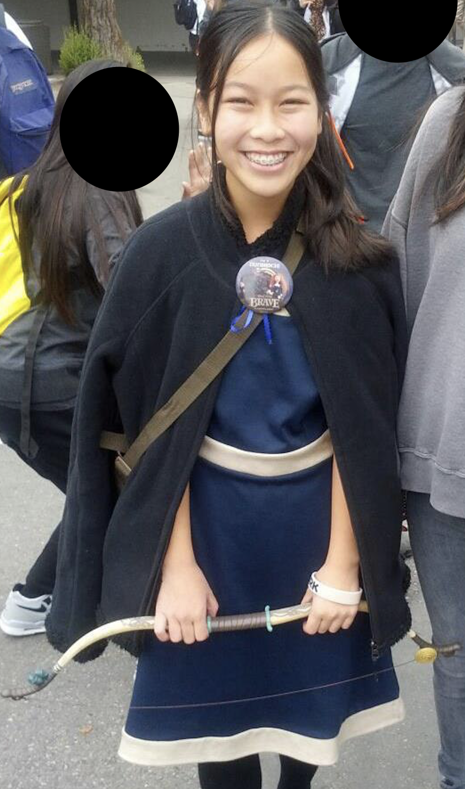
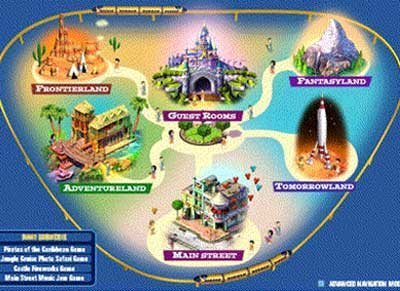

Let's build the future of Disney.
Growing up, I learned to appreciate the importance of storytelling and giving back to the organizations that helped mold me into the person I am today. Thus, Disney is one of the companies with a mission that I feel deeply connected with. Their reputation of engaging the world with an immersive experience has inspired me to be a part of the magic and help build the future of Disney.
As a programmer, I enjoy working on the backend of the tech stack, as it provides a way for me to gain a deeper understanding of computer science topics, as well as the opportunity to come up with creative solutions and designs for data visualization.
As Disney is emerging to become the leading competitor in the video streaming market, I would like to share my leadership and data analyzing skills to assist in business making decisions so that Disney can stay on top.
Ultimately, I want my impact to encourage the younger generations to take the same footsteps as me by continuing to tackle challenging problems in unique ways, and hopefully pursue technology in the entertainment industry.

(WIP) Personal Project: Disney Coin Collector
Now introducing, a more efficient way to keep track of your souvenirs at the Happiest Place on Earth.

View the GitHub repo here
Learn more about how Disney has impacted me:
Videos:
2019 #IJustCantWaitToBeContest on LinkedIn

2017 Disney Tech GHC Scholarship

Pictures:
2019 Splashing the Coding Interview
I visited the Walt Disney World parks for the first time during #GHC19! Unfortunately I had a lot of studying to do, but I could not miss my chance to visit the parks. The solution? Study in the parks! And yes, it was the most magical study session of my life.
Fun fact: Gayle L. McDowell, author of Cracking the Coding Interview, retweeted my picture on her Twitter!
2019 - Present Meeting my Inspirations!
The story here is that during #GHC19 week, I brought my book to the parks to review while waiting in line.
Since it's my dream to be a software engineer for Disney, I asked the princesses to share some luck and encouragement for me in my professional endeavors!! 🥰
2018 Met Domee Shi, director of Bao at Crunchy Roll Expo

I love making my own cosplays and attending conventions that celebrate passions for anime, art, and entertainment! At Crunchy Roll Expo 2018 , I had the opportunity to meet Domee Shi and listen to her story behind directing Bao. I admire her persistence for working at Pixar, and how she represents Asian women in the entertainment industry. Bao's emotional story and Shi's inspiring story has given me courage to pursue my dreams as an Asian in tech!
2015's Inspirations on a Graduation Cap
If you are someone like me, you have plenty of interests. See if you can spot them all! Of course I wanted to make my graduation cap Disney related, so I took a quote from my favorite princess Merida!
2012's Halloween cosplay of Merida from Brave
Brave is my favorite animated Disney/Pixar movie because I fell in love with Merida's character. I aspire to be as independent and strong as her! I also appreciate the message of the movie and how the audience learned the importance of family. Yes, I bawled in theaters.
2005 - 2008 Virtual Magic Kingdom Alumni
I consider this a hidden and forgotten secret for Disney fans such as myself. I played Virtual Magic Kingdom when it came out in 2005, and tragically when it closed in 2008. I was in elementary school and always loved Disney but never had the chance to go because my family was not financially stable, so VMK gave me the magical experience right in the comfort of my own home. I was immersed in the online experience and I hope to share my passion for massive multiplayer online games in my career. VMK opened doors for me in the online world, and I hope that my position in tech can show the younger generation the possibilities of computer science.
Let me help you get your magical experience ✨
• Budgeted $2000 for a 1 day trip to Disneyland and DCA for 2 hackathon groups• Outlined an itinerary for 5+ attendees to make the most out of their first time experience in the parks
Let's talk more about Disney. Email me at
dianephan12@gmail.com